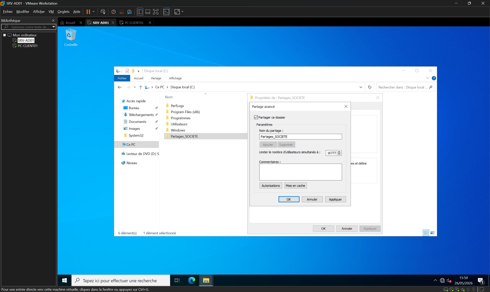
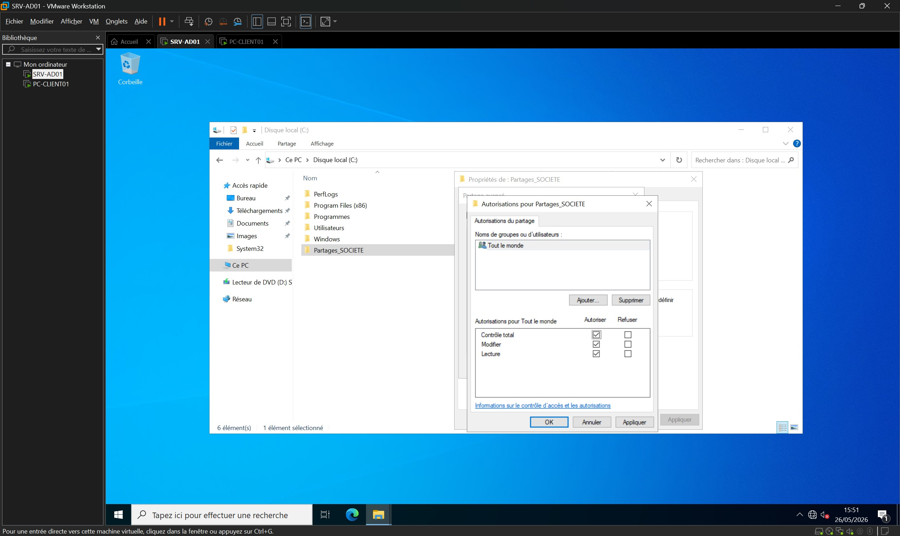
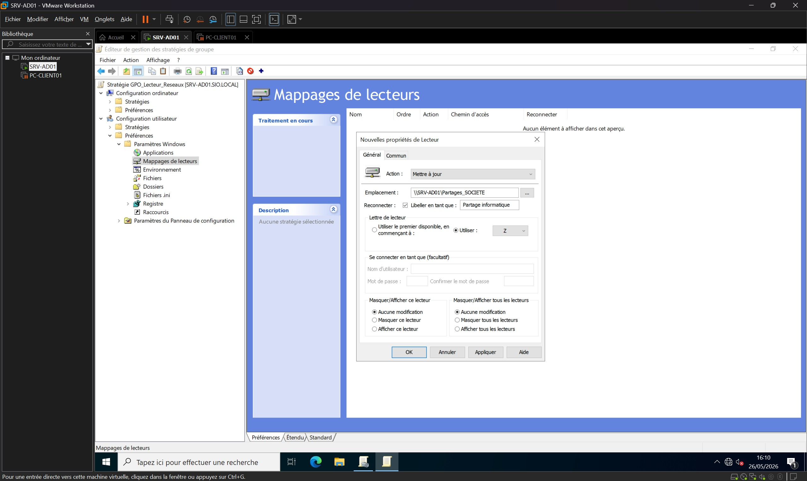
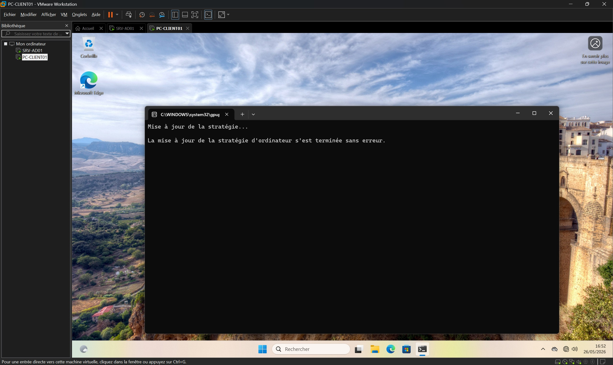
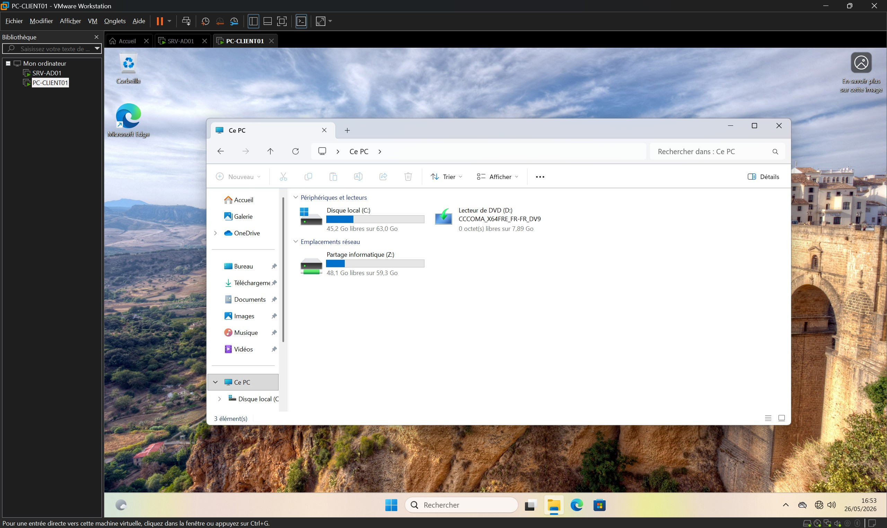

Mise en place d'un serveur de fichiers et gestion des droits d'accès (NTFS / GPO)
Présentation
Dans le cadre de l'évolution de l'infrastructure réseau de ma maquette de formation, j'ai mis en place un serveur de fichiers centralisé sous Windows Server 2022.
L'objectif de cette réalisation était de concevoir un espace de stockage réseau hautement sécurisé via des droits NTFS, et d'automatiser son déploiement sur les postes clients sous la forme d'un lecteur réseau (Z:) grâce aux Stratégies de Groupe (GPO) de l'Active Directory.
Environnement technique et Architecture
Hyperviseur : VMware Workstation Pro
VM serveur : Windows Server 2022 (SRV-AD01)
Poste Client : Windows 11 Professionnel (PC-CLIENT01)
Domaine : sio.local
Utilisateur de test : SIO\dzanatta (Membre du groupe "G_Informatique", OU "SOCIETE-SIO")
Création et configuration du partage réseau
Je me suis connecté sur SRV-AD01 en tant qu'Administrateur du domaine.
J'ai ouvert l'Explorateur de fichiers, je me suis rendu à la racine du disque local C:\ et j'ai créé un dossier nommé : Partages_SOCIETE.
Dans les propriétés du dossier (onglet Partage), j'ai activé le partage avancé.
Côté autorisations, j'ai appliqué la bonne pratique de Microsoft en donnant le Contrôle total au groupe Tout le monde sur la couche réseau, laissant ainsi la couche NTFS gérer la sécurité réelle.


Sécurisation et verrouillage des droits NTFS
Toujours sur le serveur, j'ai basculé sur l'onglet Sécurité pour configurer finement les accès.
J'ai d'abord désactivé l'héritage afin de détacher les droits du dossier de ceux du disque racine.
J'ai supprimé les utilisateurs standards pour ne conserver que les entités systèmes (Administrateurs, SYSTEM, CREATEUR PROPRIETAIRE).
Enfin, j'ai ajouté spécifiquement le groupe G_Informatique en lui accordant uniquement le droit de Modification (White listing).
Création de la GPO de mappage réseau
Dans la console de Gestion des stratégies de groupe (gpmc.msc), j'ai créé et lié une nouvelle GPO nommée GPO_Lecteurs_Reseaux directement sur l'Unité d'Organisation SOCIETE-SIO.
Dans l'éditeur, j'ai créé un "Lecteur mappé" pointant vers le chemin UNC \\SRV-AD01\Partages_SOCIETE avec la lettre Z.
J'ai pris soin de cocher l'option Exécuter dans le contexte de sécurité de l'utilisateur connecté afin de garantir que le montage respecte les droits de la session active.

Authentification et actualisation des stratégies
Sur la station Windows 11, je me suis authentifié avec mon compte de test SIO\dzanatta.
Pour forcer l'application immédiate de ma nouvelle GPO, j'ai ouvert la boîte Exécuter et lancé la commande gpupdate /force, suivie d'une reconnexion.

Recette technique et vérification des droits
Dans l'Explorateur de fichiers, j'ai pu constater la présence du volume Partage Informatique (Z:).
J'ai navigué à l'intérieur et créé avec succès un fichier test.txt, validant à la fois la GPO et mes autorisations NTFS.

Résultats obtenus et validés
L'isolation réseau a été parfaitement gérée au niveau de l'hyperviseur (résolution de conflit d'IP).
L'espace de stockage a été provisionné et partagé sur le réseau de manière optimale.
Le principe du moindre privilège a été strictement appliqué grâce au verrouillage des autorisations NTFS (White listing).
L'environnement de travail de l'utilisateur a été automatisé avec succès via les préférences de GPO.
La recette technique sur le client a confirmé le montage transparent du lecteur et l'exactitude des droits d'écriture.
Compétences mobilisées
Gérer le patrimoine informatique
Mise en place d'un espace de stockage réseau et identification des ressources d'infrastructure.
Répondre aux incidents et aux demandes d’évolution
Création d'un espace collaboratif sécurisé répondant à un besoin fonctionnel de l'entreprise.
Exploiter et sécuriser une infrastructure
Verrouillage des autorisations NTFS et industrialisation du déploiement via les Stratégies de Groupe (GPO).
Développer la présence en ligne
Documentation technique rigoureuse et publication de la réalisation sur le portfolio web.
Bilan personnel
Ce projet m'a permis de mettre en pratique l'un des besoins les plus courants et fondamentaux en entreprise : la gestion sécurisée des données utilisateurs.
J'ai compris l'importance de bien séparer les droits de Partage (réseau) des droits NTFS (système de fichiers) pour garantir la sécurité. L'utilisation des préférences de GPO pour automatiser le montage du lecteur m'a prouvé à quel point l'Active Directory permet de fluidifier l'expérience des utilisateurs tout en conservant un contrôle d'administration total.